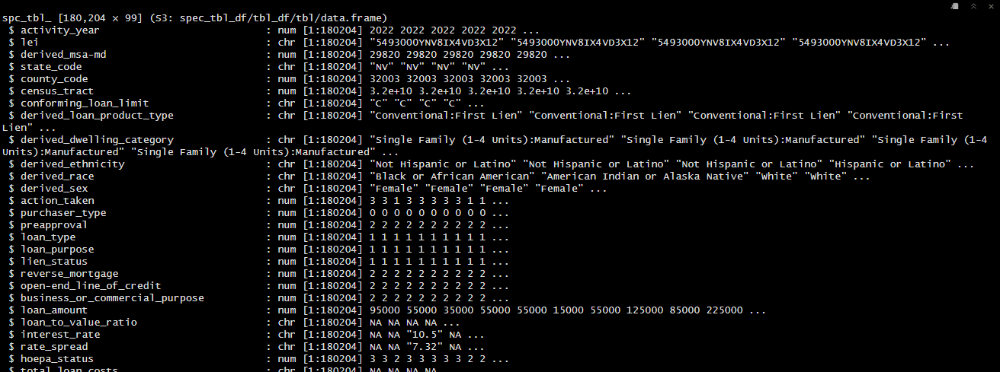

3.1 Exploring and Cleaning HMDA Data
In this section we will utilize the HMDA Snapshot data for 2022 in Nevada to practice data exploration and cleaning. The data is available at the following link: https://ffiec.cfpb.gov/v2/data-browser-api/view/csv?states=NV&years=2022. We have downloaded the data and read it into R using the following:
Where "downloads/state_NV.csv" would be the path to the downloaded dataset.
3.1.1 Exploring Data Structure
One of the first things we should do is to take a look at the structure of the data. This will help us understand the variables and their types. We can do this using the following code:

The str() function provides a summary of the data frame, including the number of observations and variables, the names of the variables, and the type of each variable. This information is useful for understanding the structure of the data and planning the analysis. In the attached image of the output above, we can see that the data frame has 180204 observations and 99 variables. We can also see that a couple of the columns got assigned incorrect data types by read_csv(), one of these being county_code which represents the Federal Information Processing Standards (FIPS) code for the county.
3.1.2 Changing Data Types
As we saw in the previous section, some of the columns were assigned incorrect data types by read_csv(). We can fix this by changing the data types of the columns using the mutate() function from the dplyr package. The dplyr package provides a set of functions for data manipulation, and the mutate() function is used to create new columns or modify existing columns.2 Below we utilize the mutate() function to change the data type of the county_code column to character:
# Change the data types of the columns
hmda_data <- hmda_data %>%
mutate(county_code = as.character(county_code))In the code above, we used the mutate() function to change the data type of the county_code column to character. as.character() is a function that converts the input to a character type, there are other functions like as.numeric() and as.factor() that can be used to convert the input to numeric and factor types respectively.
3.1.3 Using across() to Change Data Types for Multiple Columns
When you need to change the data types of multiple columns simultaneously, the across() function in dplyr can be particularly useful. The across() function allows you to apply a function to multiple columns in a mutate() call.
For example, if you want to change the data types of the census_tract, action_taken, loan_type, and loan_purpose columns to character, you can use the across() function as follows:
# Change the data types of multiple columns to character
hmda_data <- hmda_data %>%
mutate(across(c(census_tract, action_taken, loan_type, loan_purpose), as.character))In this code:
across(c(census_tract, action_taken, loan_type, loan_purpose), as.character)applies theas.character()function to each of the columns listed inside theacross()function.- This approach makes the code more concise and easier to read, especially when dealing with multiple columns.
By using across(), you can efficiently change the data types of multiple columns in one step, ensuring that your data is properly formatted for subsequent analysis.
You can learn more about the
dplyrpackage at: https://dplyr.tidyverse.org/↩︎